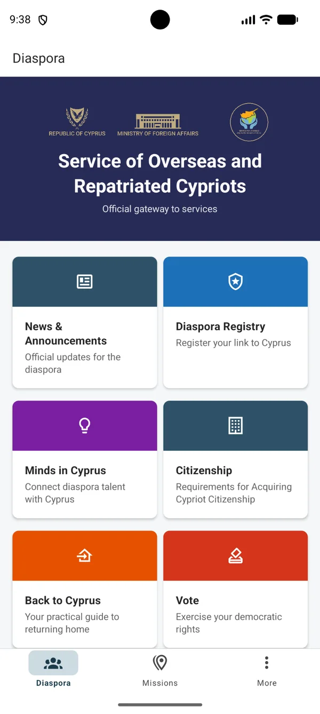

Diaspora services
News, registry information, citizenship guidance, voting information and practical resources for returning home.
Republic of Cyprus · Ministry of Foreign Affairs
DiasporaCY brings essential services, official information and the worldwide network of Cyprus diplomatic missions into one clear, bilingual mobile experience.
A privacy-first gateway to official government services.

One app, a stronger connection
DiasporaCY is organised around the real needs of Cypriots abroad and people returning to Cyprus.
News, registry information, citizenship guidance, voting information and practical resources for returning home.
Search countries, discover the office responsible for each destination and access contact details in seconds.
Connect with Minds in Cyprus resources for relocation, investment, entrepreneurship and professional opportunities.
Continue securely to official government websites for enquiries, applications and transactions.
Built for clarity
Simple navigation, readable information cards and clear calls to action help users find what matters quickly.
Privacy by design
DiasporaCY acts as a gateway to official information and services. Enquiries and transactions take place on the relevant official government websites.
Made for Cypriots everywhere
The Service for Overseas and Repatriated Cypriots supports the relationship between Cyprus and its global diaspora. DiasporaCY turns key information into a focused, accessible mobile gateway.
Explore the services, discover the mission responsible for your country and access official information with confidence.